Overview
Part 1
- Rays are generated with their origin set to the camera origin and pointing at a corresponding point on a plane. The plane is 1 unit away, and rotated to be in the direction of the camera. For every ray generated, I then calculate which of the primitives it intersects using clever math. For this part I implemented sphere and triangle intersections.
- I implemented the Möller–Trumbore intersection algorithm. This algorithm calculates two edges of the triangles, a vector from the ray’s origin to the point of intersection of the edges, a vector orthogonal to one of the edges and the ray’s direction, and an orthogonal vector to origin to point vector and the other edge. Then, using some dot products, it calculates t, b1, and b2. t is the distance from the ray’s origin to its intersection, (1 - b1 - b2), b1, and b2 are the barycentric coordinates, and are used to calculate the intersection’s normal vector as well. If t is negative the triangle is behind the camera, and if b1, b2, or (1 - b1 - b2) aren’t in the range [0, 1], then the intersection with the triangle’s plane isn’t in the triangle.
- 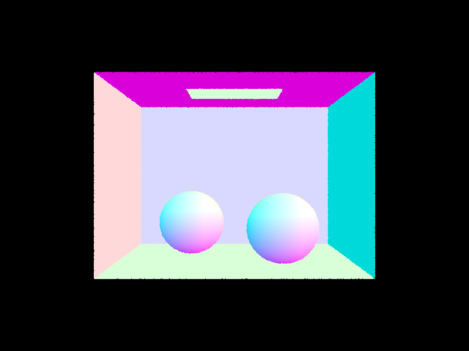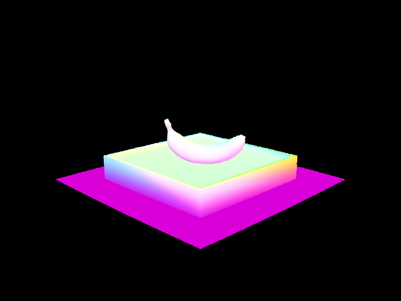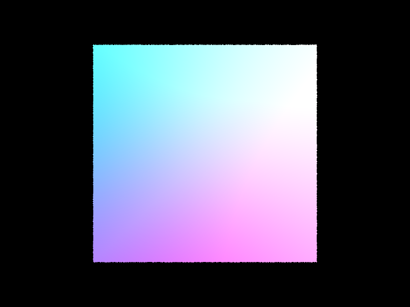
Part 2
- My BVH is a recursive algorithm with three main steps.
- Generate a bounding box containing all the points given
- Check if it meets the requirements to be a leaf node, if so make it a leaf node and return
- If not, find the axis with the largest extent (vertical and horizontal) and split it around the center-most point along that axis.
- 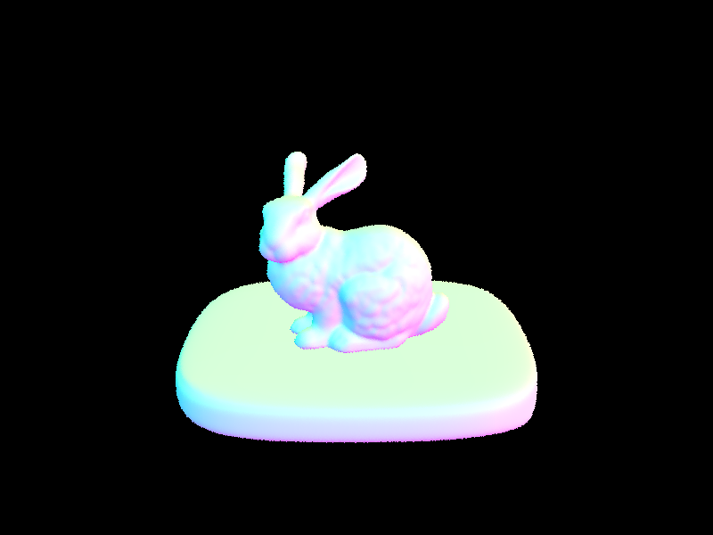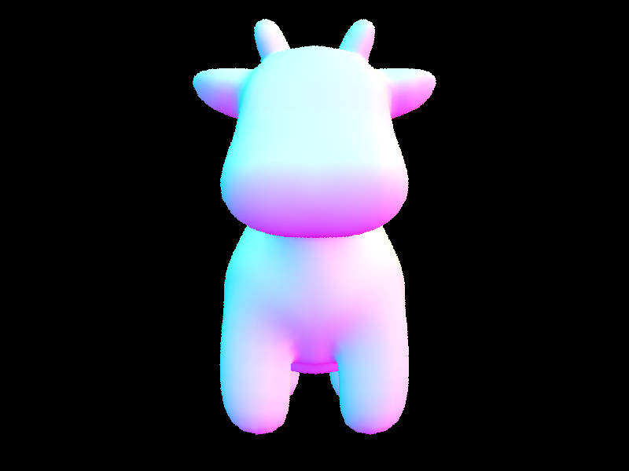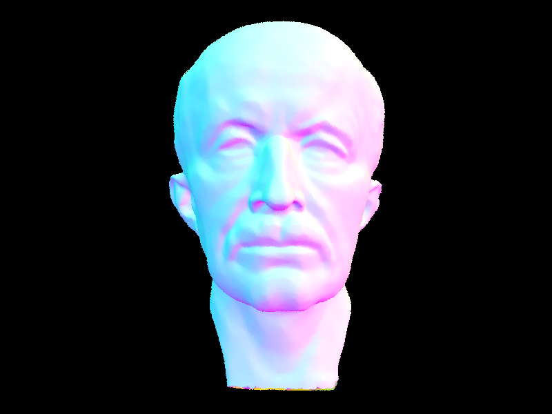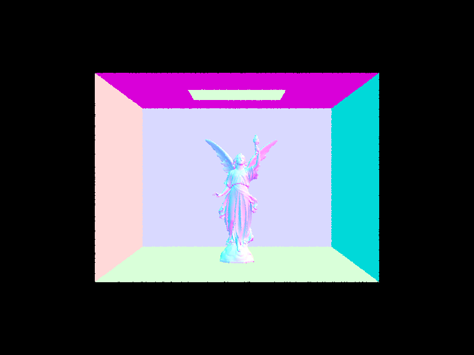
- BVH acceleration changed rendering time a lot. For a lot of the very complicated scenes, my patients wore out before the non BVH acceleration got to 20%. With BVH acceleration however, it took about a second. Two examples I did let both versions finish are the cow and teapot. For the cow, rendering time decreased from 33.97 to 0.1095 seconds. Similarly, rendering time for the teapot went from 15.63 seconds to just 0.1173. Without BVH acceleration, it’s about 200x slower. However, there’s a tradeoff. Constructing the BVH takes 20x longer! Going from 0.0002 all the way to 0.0054 seconds for the cow, and 0.0001 to 0.0033 for the teapot. BVH acceleration speeds up the rendering by a lot, and it almost never makes sense not to have (unless you’re using something better).
Part 3
- I have two implementations for direct lighting, uniform hemisphere sampling and lighting sampling. Uniform hemisphere sampling essentially shoots out rays uniformly randomly across the hemisphere of the normal vector and averages the result. Lighting sampling takes into account where the lights are, and samples only in their direction.
- Hemisphere sampling with sample rates 16 and 64
- 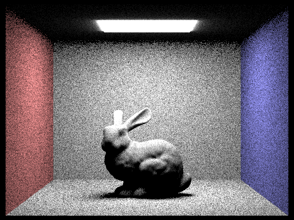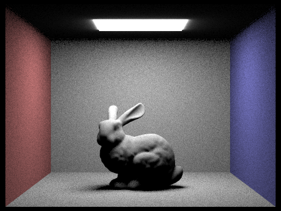
- Importance sampling with sample rates 1 and 64
- 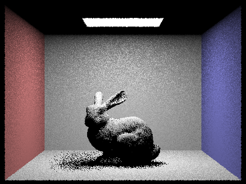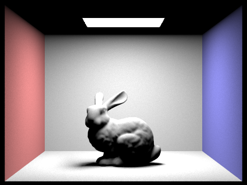
- As is visible below, having more light rays helps reduce noise and make the soft lighting much more visible.
- 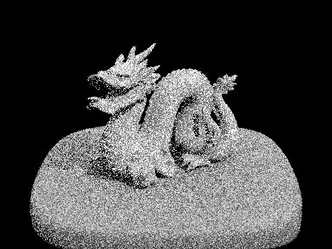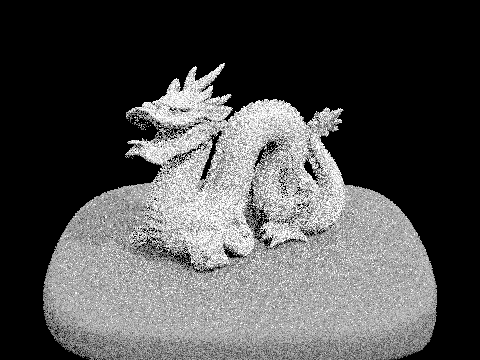
- The differences between uniform hemisphere sampling and lighting sampling are stark. Lighting sampling is a lot less noisy and everything that should be lit is lit for the most part even at low samples. Both maintain the shapes of objects and lighting well (when looking past the noise).
Part 4
- The indirect lighting function is a recursive function that determines the direct lighting at a point and adds the indirect lighting up to a certain number of bounces. It can terminate bounces early and uniformly randomly so as to speed up the process and allow for more bounces.
- 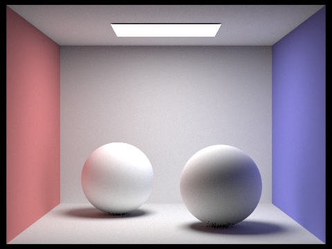
- Below is a render of only the direct illumination and only the indirect illumination.
- 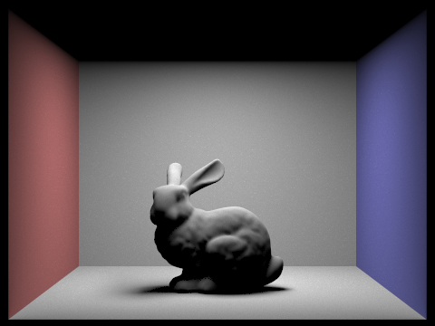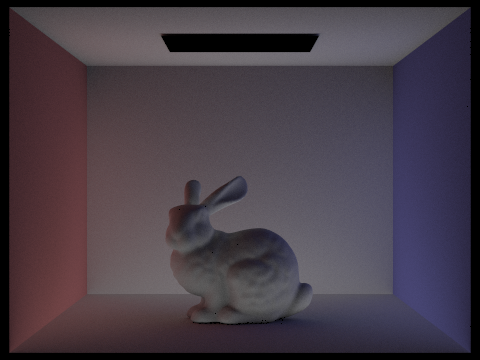
- Below are several renderings with different parameters. The top row shows just the lighting at one depth and the bottom shows the sum of all the lighting. The bounces increase from left to right going from 0 to 5.
- 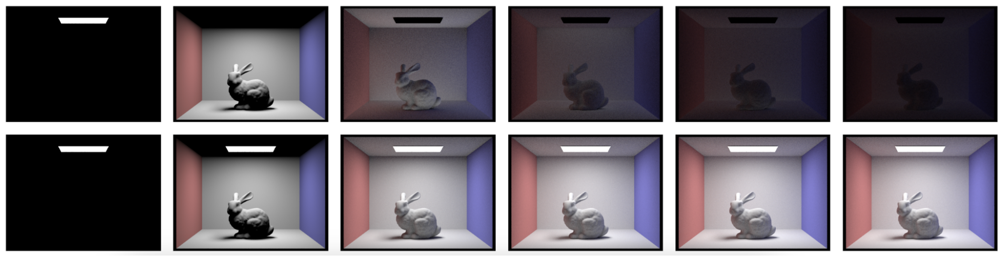
- Below are renderings using Russian Roulette rendering at sample rates 0, 1, 2, 3, 4, and 100. As I’m sure you can tell there is a slight bug with large sample rates, but I can’t spot it and it takes too long to render to debug.
- 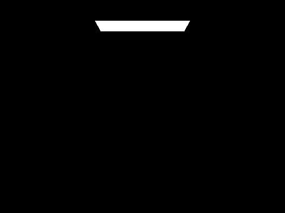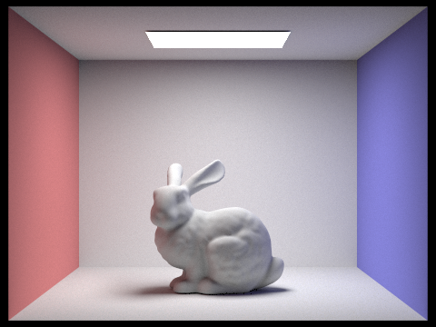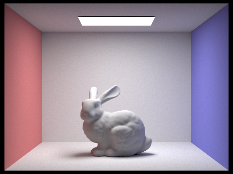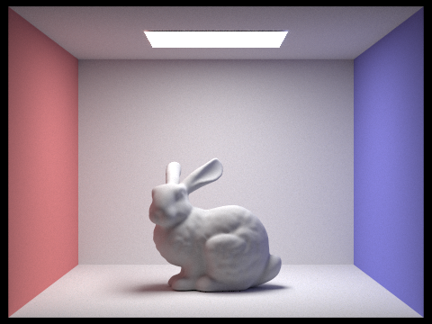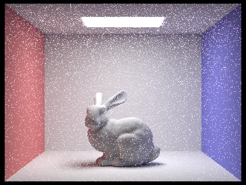
Part 5
- Adaptive sampling is an algorithm that reduces render time in most cases. It works by ending sampling for certain pixels if the values it's sampling are very similar. My implementation works by saving the sum of the illuminations and the sum of the squares of the illuminations. It uses these to calculate the variance and mean, and if they don’t fit my equation, end sampling for this pixel.
- 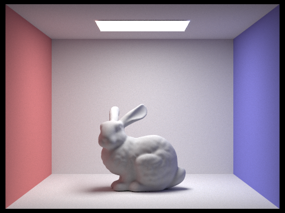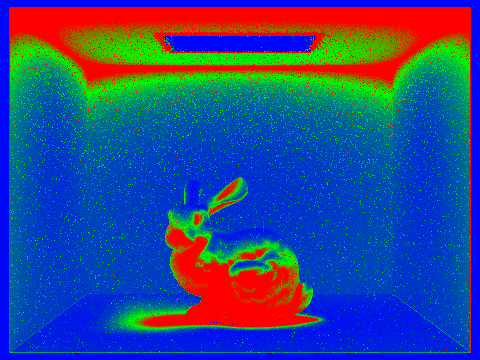
- 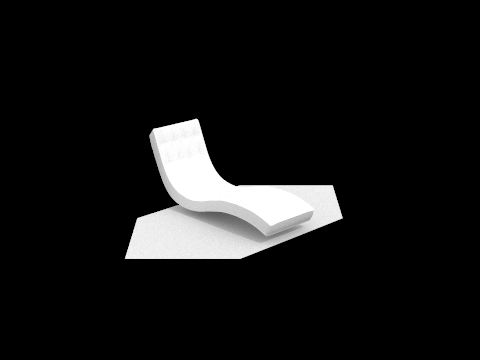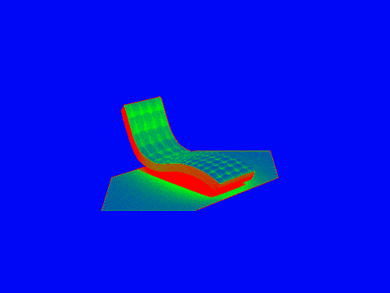